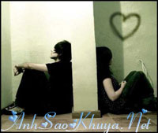

|
(Ở nơi đâu cũng luôn vui vẻ nghe em !) - Mình ở xa nhau thế này, nếu có một ngày em không liên lạc với anh nữa thì sao. - Vậy thì anh sẽ chờ em đúng 1 năm - Tại sao lại 1 năm ? - Một năm để anh còn đi tìm người yêu khác nữa chứ! Họ cười. Và giống như mọi khi, họ lại tiếp tục với những câu chuyện vui vẻ. Tình yêu của họ bắt đầu từ một tình bạn online.Dù ở xa nhau họ vẫn trao cho nhau thứ tình cảm thiêng liêng nhất của mình. Bỗng đến một ngày, người con trai không thể liên lạc được với cô gái. Yahoo, điện thoại, mọi thứ gần như trở thành vô dụng. Người con trai vô cùng buồn bã. Có lẽ nào người con gái đã quên anh. Rồi một hôm, một tin nhắn gửi đến, chính từ số điện thoại của cô gái. Người nhắn tin nói rằng cô gái đã mất trong một vụ tai nạn trước đó vài hôm. Đau đớn đến tốt tột cùng, anh gần như muốn từ bỏ tất cả mọi thứ.Trái tim anh đã thực sự yêu, và giờ đây là tan vỡ. Bạn bè anh nói với anh rằng anh nên quên cô đi, vì một tình yêu online thường ko có kết quả, vì cô đã ko còn nữa.Nhưng ko, trái lại, anh lại lưu giữ tất cả những kỷ niệm về cô. Và mỗi ngày, anh lại ko quên nghe lại những tin nhắn bằng lời nói mà trước đây cô gửi cho anh .Anh nhớ cô gái rất nhiều. - Nhóc ah, em giờ ra sao.Em giờ có vui không, em có nhớ về anh không. Nhóc ah, anh nhớ em rất nhiều.Ở nơi đâu cũng luôn vui vẻ nghe em. - Nhóc ah, lại một tối thứ 7 nữa rồi, lại 1 tuần nữa anh phải xa em. Nhóc ơi,em bây giờ ra sao, em đang làm gì, em có nhớ anh không. Nhóc ơi, anh nhớ em rất nhiều.Ở nơi đâu cũng luôn vui vẻ nghe em. Mỗi cuối tuần, trước 12h tối thứ 7, dù cho có bận rộn đến như thế nào, người con trai vẫn không quên comment vào blog của cô gái. Những lời lẽ nhớ thương và đau đớn, luôn kết thúc bằng: - Ở nơi đâu cũng luôn vui vẻ nghe em - Thời gian thấm thoát, gần một năm trôi qua. Người con trai vẫn giữ nguyên thói quen comment vào blog cô gái trước 12h tối thứ 7.Anh nghe lại những audio tin nhắn của cô, rồi chỉ biết ngậm ngùi. Một hôm, anh nhận được tin nhắn từ số điện thoại của cô gái. - Anh ơi, anh giờ thế nào rồi, anh có khỏe không. Ngày mai, em muốn gặp anh được không. Sáng hôm sau, hai người gặp nhau. Là cô gái, là chàng trai. Chính họ, 1 năm trước đây, họ là những người đã có một tình yêu thắm thiết. Trông cô chững chạc hơn so với những hình ảnh qua blog, wc mà anh được xem trước đó rất nhiều. - Em có khỏe không? - Em khỏe ! - Em có người yêu chưa? - Dạ ! Câu trả lời gần như không cần suy nghĩ như muốn nói với anh rằng: cô đã có người yêu, và giờ đây cô đang rất hạnh phúc, anh hãy quên cô đi. Cuộc trò chuyện của 2 người yêu nhau sau gần 1 năm xa cách, không liên lạc diễn ra chóng vánh đến lạ kì. Có thể, họ chỉ quen trò chuyện online, có thể họ vẫn chưa quen với việc gặp nhau ngoài đời, nhưng nó giản đơn quá, nhanh quá, bình thường quá. Rồi 2 người chia tay nhau. Cô gái nuối tiếc và hụt hẩng, cô không hiểu tại sao cô lại không thể nói gì, không thể làm gì, mặc dù cô đã chuẩn bị rất kỹ cho cuộc gặp này.
- Nhóc ah, giờ em đang ở đâu.Em có nhớ anh không không. Nhóc ơi, anh nhớ em rất nhiều. Ở nơi đâu cũng luôn vui vẻ nghe em.
Vẫn là những conment ấy, vẫn luôn kết thúc bằng:" Ở nơi đâu cũng luôn vui vẻ nghe em". Hình như cuộc gặp sáng nay đối với anh không hề có ý nghĩa. Hình như, trong suy nghĩ của chàng trai, người con gái mà anh mới gặp sáng nay và Nhóc con mà anh đã từng yêu là hai người khác biệt. Cô bật khóc và chợt nhớ rằng cô nợ anh rất nhiều lời xin lỗi, cô nợ anh rất nhiều lời giải thích.
Cô tự nhủ với mình, tuần sau, sáng thứ 7, cô sẽ đến bên anh, sẽ nói với anh tất cả mọi điều, rằng vì sao lại lại có tin nhắn kia, rằng vì sao cô đã không liên lạc, hồi âm cho anh trong suốt gần 1 năm, rằng vì sao cô vẫn còn sống mà vẫn cứ để anh nghĩ cô đã chết. Cô muốn nói với anh, tình yêu của cô bấy lâu nay dành cho anh vẫn chưa một lần thay đổi. Cô rời xa anh vì cô biết khoảng cách về địa lý, về sự khác biệt giữa 1 chàng sinh viên năm cuối và 1 cô gái học hành dang dở, cô muốn anh hạnh phúc bên một người con gái khác.
Cô muốn nói với anh rằng: cô vẫn âm thầm đọc những tin nhắn của anh vào cuối tuần để rồi lại bật khóc sau khi đọc chúng. Chính những tin nhắn đó đã truyền cho cô nghị lực để không ngừng cố gắng trong suốt thời gian qua, và giờ đây, cô đã là cô chủ của một cửa hàng thời trang nhỏ ở một nơi không quá xa nơi anh ở.Cô muốn nói với anh rằng: cô vẫn yêu anh, vẫn chờ anh, vẫn chưa yêu một người nào khác. Và nếu một trong 2 người có ai đó ra đi, cô sẽ là người bước sau.
Một tuần trôi qua, cô tìm đến bên anh, chờ anh. Nhưng không. Anh đã không còn ở đây nữa. Chuyến bay sớm từ sáng tinh mơ đã đưa anh tới một nơi hoàn toàn xa lạ, nơi anh sẽ làm việc ở đấy, và có thể sẽ không bao giờ trở lại. Cô khóc nức nở.Cô hận mình tại sao lại không thể nói với anh được nhiều hơn những gì mà cô đang nghĩ.Cô trở về nhà với chút sức lực cuối cùng. Tối thứ 7, và như thói quen, cô lại mở blog để đọc lại những comment của anh.Một conment đã gửi tới từ đầu chiều:

- Nhóc ơi, em có khỏe không. Em bây giờ ra sao..Anh đã chờ em, đúng 1 năm như lời hứa ban đầu. Bây giờ thì anh phải đi rồi, nhưng không phải là vì đi tìm tình yêu khác đâu, bởi vì anh đã yêu em, và sẽ chỉ yêu em thôi. Có thể anh sẽ không vào lại yahoo này nữa, và anh sẽ không comment cho em nữa, nhưng những ký ức của anh về em, về tình yêu anh dành cho em, anh sẽ không bao giờ quên.Chúc em hạnh phúc bên người mình yêu. Nhóc ơi,ở nơi đâu cũng luôn vui vẻ nghe em.
" Chúc em hạnh phúc bên người mình yêu " Nó không dành cho Nhóc con ngày trước. Cô gục xuống bàn và chỉ biết khóc, những tiếng khóc muộn màng.
"Trong tình yêu, sự cao thượng đôi khi đặt không đúng chỗ sẽ chỉ khiến cho cả hai người cùng đau khổ. Tình yêu là phải cùng nhau chia sẻ để vượt qua những khó khăn chứ đừng bao giờ nghĩ rằng mình sẽ là gánh nặng mà rời xa người ấy. Nhóc ơi, anh vẫn không biết vì sao em lại muốn rời xa anh khi mà chúng ta đang có những kỷ niệm đẹp, rằng vi sao em muốn anh nghĩ rằng em đã chết… Anh đã tin rằng đấy là sự thật, và anh đã thực sự rất buồn. Để rồi giờ đây.... Nhóc ơi, những kỷ niệm về em, những tin nhắn của em, những lời nói của em, tất cả anh sẽ không bao giờ quên. Anh viết nên câu chuyện này, và muốn nói với em rằng: Dù thế nào đi nữa thì ở trong anh có một vị trí không bao giờ thay đổi - Vị trí ấy anh sẽ dành cho em ! "
Nguồn: Bản quyền của ASK || Tham gia bình luận TẠI ĐÂY ||
Bạn vô tình đọc ở đâu đó một câu chuyện tình cảm động hoặc một câu chuyện do chính bạn viết ra. Hãy đến với chúng tôi để cùng nhau chia sẻ: wWw.anhsaokhuya.net
Chung tay vì một thế giới online lành mạnh !
|